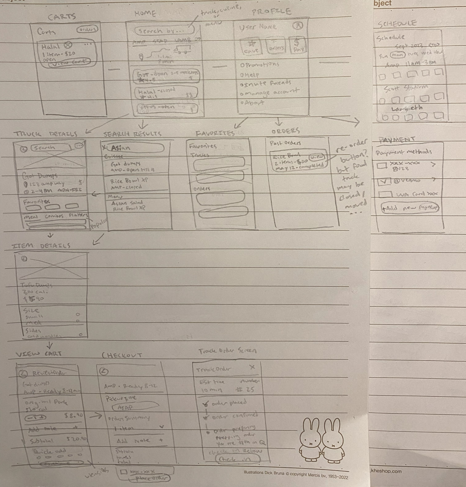

As part of the Forge Wireframe curriculum, our three-person team embarked on a final project aimed at solving a real-life design challenge. Our group chose to tackle the intricate process of ordering from UVA's beloved food trucks.
Food truck culture thrives at UVA. However, as of recently the only way to order from food trucks online is through Grubhub’s campus dining feature. While some students adjusted to this new user journey, others found it difficult for a variety of reasons. Food truck owners, as local small businesses, are also burdened by the high vendor fees imposed by Grubhub.
UVA students needed an intuitive, dedicated, and comprehensive platform for ordering from the food trucks across grounds.
As part of my research, I looked at the popular food delivery apps Grubhub and Uber Eats, as well as Good Uncle, a food truck app catering towards college campuses. This research was very beneficial to help me understand the market and learn the different screens and interfaces required of food ordering apps.
Based on my market research, I conducted a SWOT analysis of our proposed WahooWheels to better determine the real-world strengths and weaknesses of our intended solution.
WahooWheels is unique in that it is exclusively for food trucks at UVA, with features designed specifically to make the process of ordering from food trucks easier, and a market advantage with its model of empowering small businesses.
Food trucks are a very niche use case, and users may be reluctant to download a new app and go through the onboarding process just for this use case.
There is already a big competitor, Grubhub, that UVA students use everywhere for its meal plan and Cavalier Advantage integration.
The market analysis illuminated critical insights that were key to shaping the design of our proposed food truck app.
In the face of established competition, our proposed app stands to offer a specialized experience that caters specifically to and uplifts the vibrant food truck culture at UVA. With this knowledge, we turned to UVA students to make sure our app meets the needs and expectations of potential users.
To get a better understanding of our user base, we sent out an initial survey to 22 students we knew had previous experience ordering from food trucks on grounds.
In order to get a clearer understanding of user motivations and uncover any pain points that our survey may have missed, I conducted casual interviews with potential users about their experience ordering through Grubhub. I asked the survey questions listed above as well as the following additional questions:
The results of my interviews aligned closely with our survey results, while providing valuable insight into the reasoning and unmet needs of potential users.
[The check in process] is so buggy. They don’t give you enough instructions on where to tap and how to use it… When it gets crowded too, the tapping is annoying
I would like to order on the phone so I don't have to wait in line and can just pick it up… I eat at food trucks for the convenience, so it sucks when [the process] gets complicated.
It's not that hard to order on Grubhub, but I feel like UI is pretty bad with the food trucks.
It feels like Grubhub wasn’t built for food trucks, they just kinda added it on. Maybe it would be nice if food trucks had their own app?
Our user research showed that the current process of ordering from food trucks is significantly challenging for some users, as well as uncovered some of the general feelings and specific pain points faced by students using the existing system. This led us to following problem statement:
UVA students require a dedicated and comprehensive platform to order from food trucks around grounds, in order to better access convenient and delicious food.
From our interviews and survey results, we saw users tend toward two distinct personas:

We developed an initial journey map that could accurately describe the food truck ordering process of both Carla and Edgar.
Based on this affinity map, two essential user stories for our proposed application emerged at the top of the hierarchy:
This section demonstrates my team's initial attempt at a design solution, from low-fidelity wireframes to a high-fidelity prototype. Figma was used as the design and collaboration tool.

I designed some wireframes that focused on Carla and Edgar's goals and would allow them to:
While this is the initial design solution that our team arrived at, after the conclusion of the course I decided to revisit this project and redo the design process for the following critical reasons:
My goals for the redesign of our team’s design solution were to address the reasons listed above, so I broke these goals down into the following design requirements:
I decided to rework the design from scratch, starting off my process with rough paper sketches. I continuously referred to our user research and my goals for this redesign for the reasoning behind my design decisions.
I designed some wireframes that focused on Carla and Edgar's goals and would allow them to:
